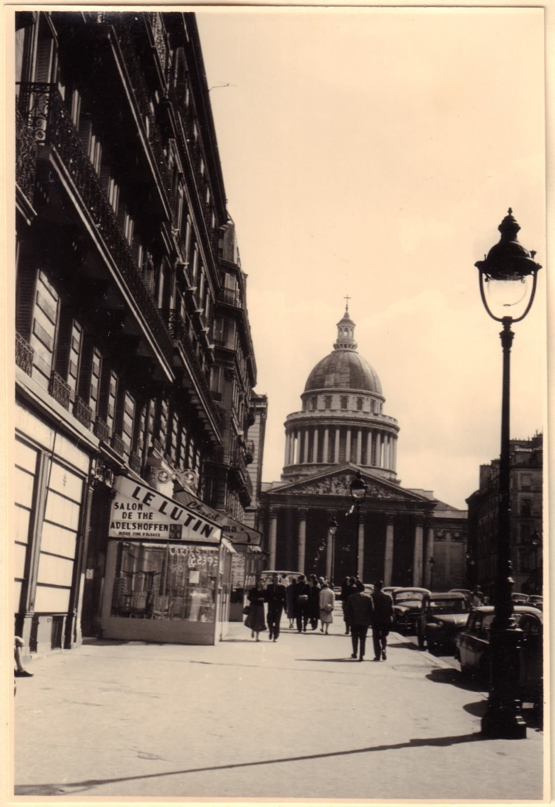
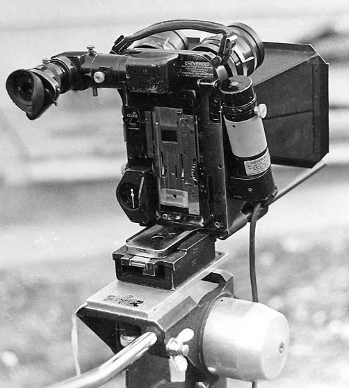
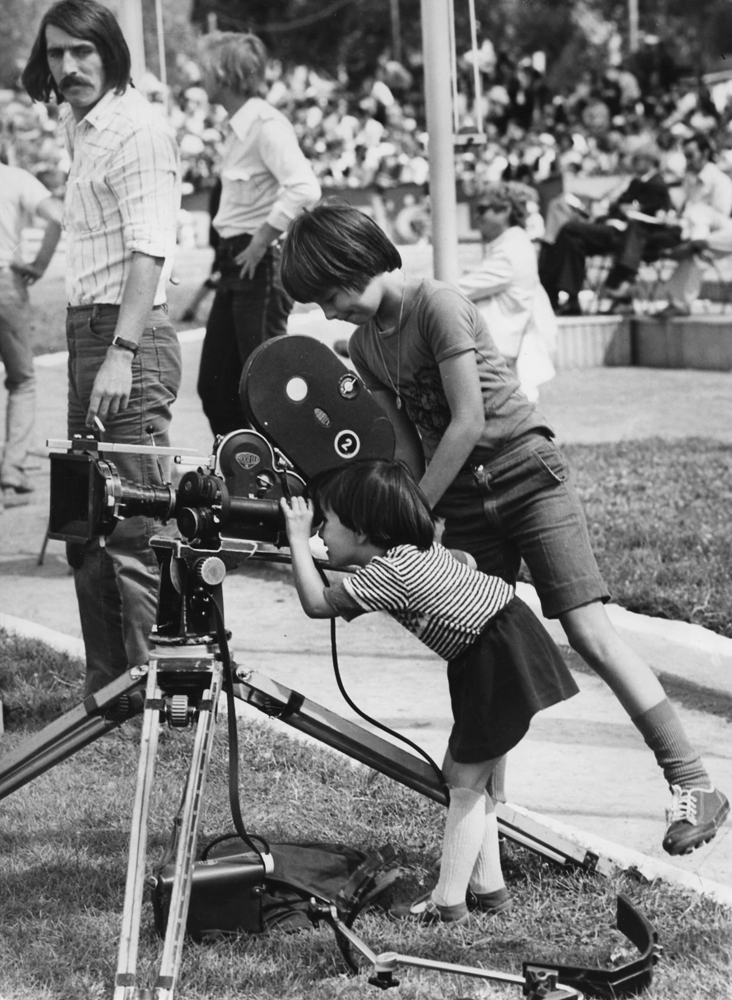

Wednesday · Film
(c. 1958–64): the camera leaves the studio
Young French critics attacked the polished studio cinema they called the , then made their own films in real streets with lighter cameras. A 1959–62 burst of features, and a magazine that had already trained an audience, gave the press a name: .

“” was a press label before it was a school. The people in this lesson argued in , learned at the as much as at the official film school , then made films that did not look like the they had been attacking. This lesson looks out from Paris. , the , and were happening in the same years. They are not assigned peers. is a later relative that borrowed the “new cinema” idea, not a 1960 contemporary.
Select any words, or tap a dotted term.
- 1951–54 Cahiers was founded in 1951. ’s 1954 essay “” named the as the enemy.
- 1955–58 Before the name ’s and ’s . Critics were already picking up cameras before the press had a label for them.
- 1959 Cannes and . The festival gave international journalists a date they could print.
- 1960–62 The burst , , , , and arrived in a short stretch of years.
- 1960s Elsewhere and the ; the ; . Same years, different arguments with their own studios.
- 1980s A later relative . The French name traveled. Travel is not the same as origin.
Before
A fight with studio “quality,” a magazine, and a camera light enough to carry
The French cinema the young critics wanted to replace had a name they gave it: , or — well-upholstered literary adaptations, studio craft, a finished look that felt, to them, dead. ’s 1954 essay “” is the fight in print. The other half of the fight was the . A director, even in Hollywood, could be an author. counted. So did . So did . The insult to the French studio system was the point: if those American directors were authors, the polished French adapters were not.
They had learned the argument in rooms that were not , the official French film school. Postwar trained an audience to argue. The , under , showed Hollywood and Europe as if the distinction did not matter. ’s , founded in 1951, hired the arguers: , , , , . The official school existed. The joke — and it was only half a joke — was that you learned more in Langlois’s dark than in a curriculum.

They were not the first people to want a camera outside. had already taken the war’s rubble as a set. What was new in Paris was the combination: critics who became directors, a magazine that had already trained an audience, faster film stock, lighter cameras, and producers — , — willing to bet on a low budget that looked like a choice.
The era
What the films looked like once they left the studio
The look is easy to list and easy to turn into a costume. . . . Young non-stars or new faces: , , , . Handheld cameras, walking them through traffic. A 1959–62 burst in which it suddenly seemed that everyone who had written for , and several people who had not, had a feature. versus the group is a map of that burst, not a ranking: , , , on one side of a useful line; , , , , on the other. ’s (1958) sits beside that cluster. The line leaks. That is why it is a map and not a membership list.
’s (1958) is the film historians often call the first feature: a return to a provincial town, not a Champs-Élysées postcard. ’s (1961) makes the city a rumor of plots and rehearsals. ’s (1961) finds a musical pulse in Nantes. The press needed a date anyway. , 1959, supplied one.
The field
Many filmmakers, and three films to look at closely
, , , , , , , , , : that is already too many for a poster and too few for a census. Add the actors — , , , — and the people who made the images possible: Coutard, , Duras, Beauregard, Braunberger, Langlois, Bazin. Deepen only a few works, as examples inside the field.
is the public breakthrough. , who had been banned from as a critic, arrived in 1959 as a director and won best director. The film follows , played by , through a Paris that is not a postcard — school, streets, a runaway, a freeze-frame on a beach. It is the date the press needed. It is not the first film in the cluster. It is the one that made the cluster visible abroad.
is the film that made the famous as a choice, not a mistake. , 1960; and ; Coutard’s camera; Decugis in the cutting room. The plot is a thin crime story. Time skips inside shots. The hero talks as if the audience were in the room. Later classrooms will call this a philosophy. It was also a way to shorten a film without reshooting Paris. Both things can be true.
and keep the map from collapsing into two men and a . ’s 1962 film walks a singer through two real-time hours of Paris while she waits for a medical result. ’s 1959 film, from a Duras screenplay, refuses to let time stay put: a French actress, a Japanese man, a city that is not Paris. had already been ’s earlier claim, in 1955. If “” only fits the men, the word is too small.


Elsewhere
The same years, different arguments
In Britain, ’s shorts and manifesto — , , — had already argued for everyday subjects and a camera that did not owe the studio a polished lie. The features that followed are contemporaneous, not a French franchise. In Japan, , , and others were breaking studio form; the phrase borrows the French name and then goes its own way. — and ’s (1961) — is another French argument of the same years: not fiction’s , but a claim on the present tense. These are contemporaneous arguments, not a ranking with France at the top.
After
Later filmmakers borrowed the methods, and a later cinema borrowed the name
American studios in the late 1960s needed a younger audience and had lost the old Production Code’s certainty. (1967) is the sentence film histories use to connect Paris to . The connection is real and incomplete. A lot of other things — television, the draft, the collapse of the studio system’s weekly habit — were part of the same American turn.
, in the 1980s — , , and others — is sometimes filed as another “.” It is a later relative: a different state, a different language politics, a different argument with its own studios. It does not belong on the 1958–64 timeline except as a reminder that the French name traveled, and that travel is not the same as origin.
A question
A question to keep asking
If the director is the author, whose names have to wait in the credits?
Fun fact
The jump cuts were also a way to shorten the film
and editor shortened by cutting inside shots, not only between them. The is now taught as a philosophy of time. It was also a way to lose running time without reshooting Paris. Both things can be true: a device can be an idea and a solution to a reel that was too long.